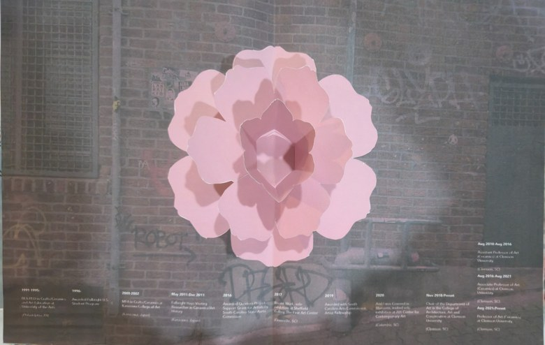

AN INTERACTIVE LOOKBOOK
Explore the book.
Two flowers. Two experiences.


Preparing the experience…
Allow camera access when asked. Start AR enables sound. You can mute it at any time. Camera images are processed on your device.
AN INTERACTIVE LOOKBOOK
Two flowers. Two experiences.

Preparing the experience…
Allow camera access when asked. Start AR enables sound. You can mute it at any time. Camera images are processed on your device.
Scan either page